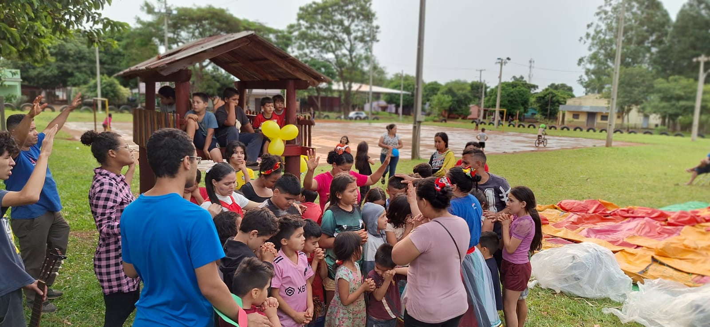
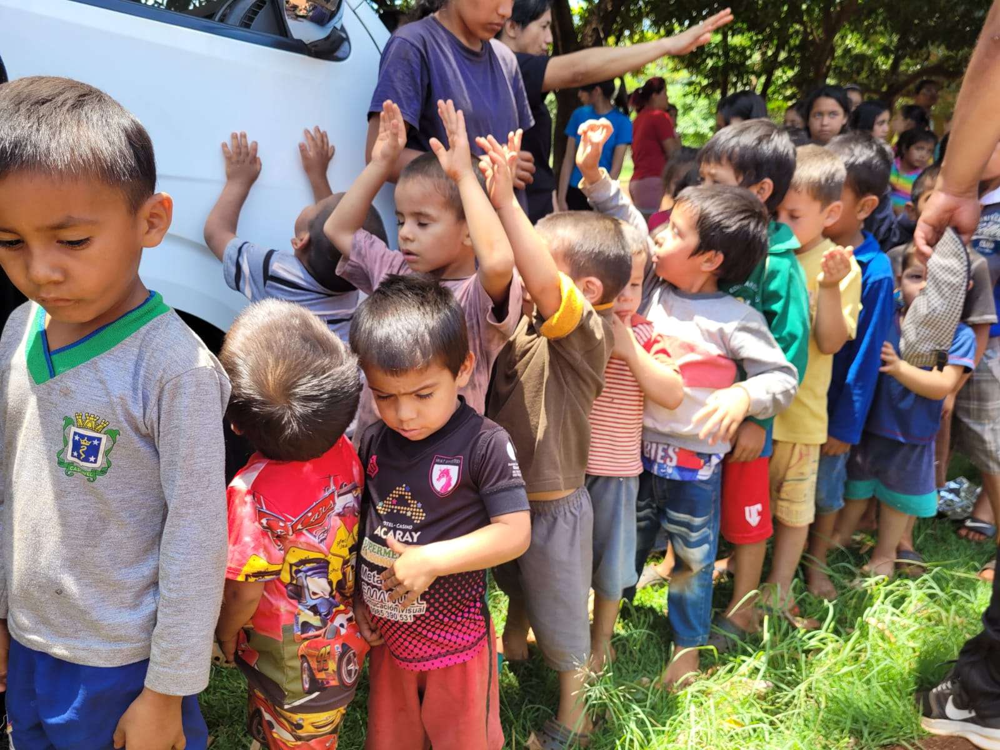
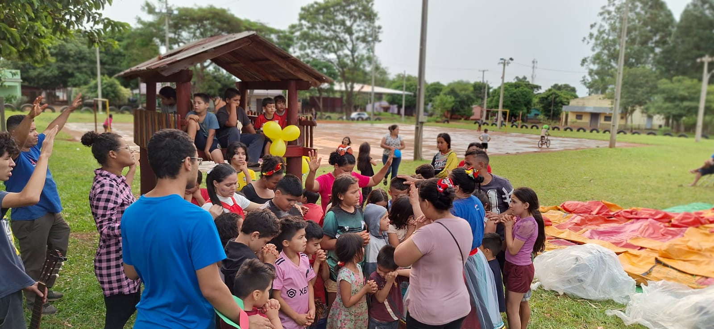
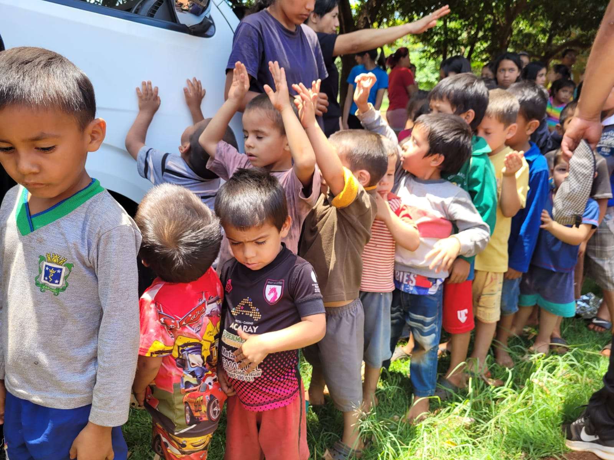

Ayudando a las familias
y trayendo salvación.DOAÇÕES | DONACIONES | DONATIONS


¡El sueño de Dios!
Adalto da Silva Almeida, convertido a la fe a los 22 años, se casó con Daiene de P. B. de Almeida a los 24 años. A los 26 años tuvo la oportunidad de realizar estudios teológicos de tiempo completo en la Faculdade Teológico Sul Brasileiro, hoy conocida como SETESB Seminário Teológico Sul Brasileiro, ubicada en Vargem Grande Paulista, São Paulo. Completó su formación con distinción, obteniendo la licenciatura en Teología, seguida de la convalidación del curso por la prestigiosa Facultad de Teología Integrada FATIM. Además, profundizó sus conocimientos realizando estudios de posgrado en...
El propósito de Dios

Valores
Guiados por los valores bíblicos, buscamos vivir con justicia y verdad, obedeciendo...

Misión
Evangelizar, Ganar, Consolidar, Discipular y enviar...

Visión
Que todos conozcan a Jesucristo. Nuestro propósito es guiar a las personas a...
Comentarios
 Lucas da Silva
Lucas da Silva
Participé en la obra misional con el Pastor Adalto en Paraguay y fue una de las mejores experiencias que he tenido. Es un pastor muy comprometido y resiliente, solo a través de su trayectoria de vida se puede ver eso en él.
Daniel Ebginer
Fui por segunda vez a Paraguay para ver los proyectos del pastor y es un hombre muy honesto.
Harley Silva
El pastor Adalto y el pastor Dayane son una bendición.


 



 Facebook
Facebook Tiktok
Tiktok Instagram
Instagram